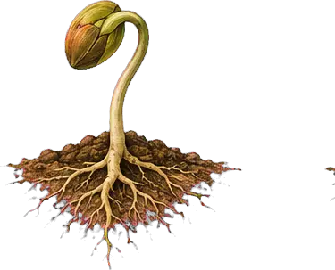

Living Guide 01

Begin here
Awakening Regeneration
The guide we wish someone had given us before we planted our first garden.
A practical, hopeful companion for remembering that change begins with relationship.
- See the whole
- Begin where you are
- Choose one living action